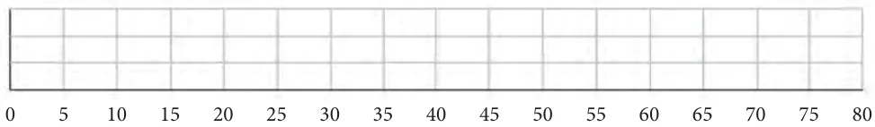
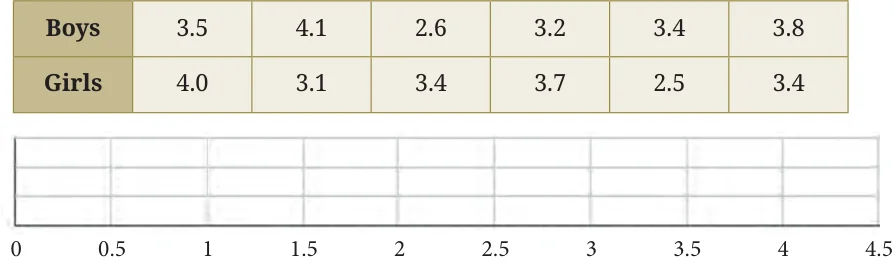
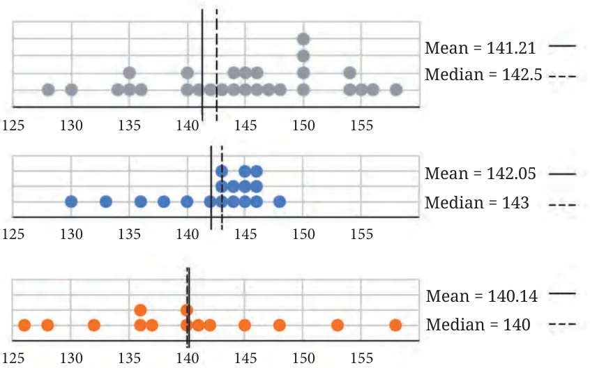
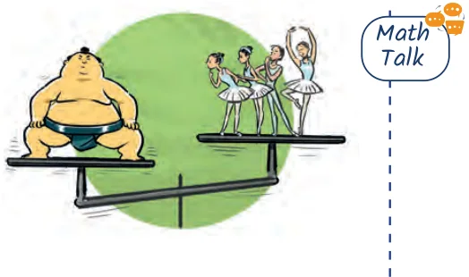

- 1.Find the median of onion prices in Yahapur and Wahapur.
- 2.Sanskruti asked her class how many domestic animals and pets each
had at home. Some of the students were absent. The data values are 0, 1, 0, 4, 8, 0, 0, 2, 1, 1, 5, 3, 4, 0, 0, - , 10, 25, 2, - , 2, 4. Find the mean and median. How would you describe this data?
- 3.Rintu takes care of a date-palm tree farm in Habra. The heights of
the trees (in feet) in his farm are given as: 50, 45, 43, 52, 61, 63, 46, 55, 60, 55, 59, 56, 56, 49, 54, 65, 66, 51, 44, 58, 60, 54, 52, 57, 61, 62, 60, 60, 67. Fill the dot plot, and mark the mean and median. How would you describe the heights of these palm trees? Can you think of quicker ways to find the mean? How many trees are shorter than the average height?

- 4.The daily water usage from a tap was measured. The usage in liters
for the first few days are: 5.6, 8, 3.09, 12.9, 6.5, 12.1, 11.3, 20.5, 7.4.
- (a)Can the mean or median daily usage lie between 25 and 30?
Justify your claim using the meaning of mean and median.
- (b)Can the mean or median be lesser than the minimum value or
greater than the maximum value in a data?
- 5.The weights of a few newborn babies are given in kgs. Fill the dot
plot provided below. Analyse and compare this data.

- 6.The dot plots of heights of another section of Grade 5 students of the
same school are shown below. Can you share your observations? What can we infer from the dot plots and the central tendency measures?

Whole class
Boys
Girls
Compare the heights of the two sections. Share your observations.
- 7.The weights of some sumo

wrestlers and ballet dancers are: Sumo wrestlers: 295.2 kg, 250.7 kg, 234.1 kg, 221.0 kg, 200.9 kg. Ballet dancers: 40.3 kg, 37.6 kg, 38.8 kg, 45.5 kg, 44.1 kg, 48.2 kg. Approximately how many times heavier is a sumo wrestler compared to a ballet dancer?